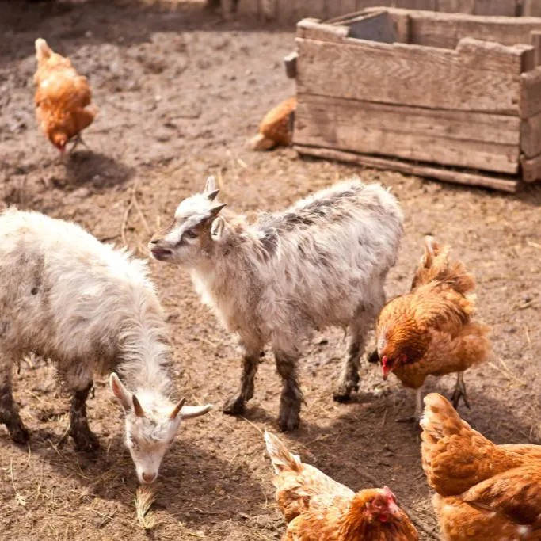

Caring For Her Animals

Julia has a deep love for caring for farm animals. She owns a small but lively collection of
chickens, goats, and turkeys, each with their own unique personality. Every day, she tends to
their needs, making sure they are fed, healthy, and happy. She enjoys collecting fresh eggs from
her chickens and milk from her goats, finding joy in these simple, hands-on tasks. Caring for her
animals allows Julia to connect with nature, embrace a slower pace of life, and experience the quiet
satisfaction that comes from nurturing living creatures. Her daily routine with her farm animals is
not just a chore, but a cherished part of her life that brings purpose, comfort,
and a sense of harmony.
Solving Sudoku Puzzles
Julia enjoys challenging her mind with Sudoku puzzles. Sitting down with a puzzle allows her to
focus, think strategically, and enjoy the satisfaction of finding the solution. It’s a quiet,
rewarding pastime that sharpens her problem-solving skills and provides a little daily mental
exercise.
Walking Nature Trails

Julia enjoys exploring the local nature trails in and around Elizabethtown, Kentucky. Walking
these paths gives her a chance to immerse herself in the sights and sounds of the outdoors.
She takes time to observe the changing seasons, appreciating the colors, textures, and subtle beauty
that often go unnoticed in the daily rush of life. These walks are not just exercise, but a way for
Julia to clear her mind, reflect, and connect with the natural world.